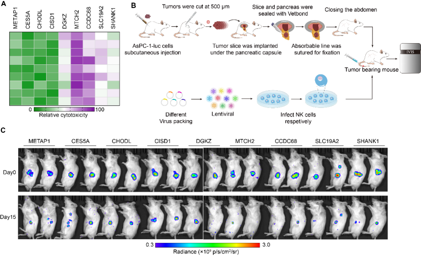

Objectives
The utilization of chimeric antigen receptor (CAR)-natural killer (NK) cells therapy has shown promise as an immunotherapeutic strategy in combating hematological malignancies. Nevertheless, this therapy encounters various challenges, notably the tumor microenvironment (TME). The identification of an appropriate methodology and molecular target for modifying NK cells to achieve desired functionality under the immunosuppressive pressure of the TME holds significant implications for NK cell-centered therapies.
RESULTS
Identification of boosters of effector function for NK cells under TME pressure
The solid tumor, particularly pancreatic ductal adenocarcinoma (PDAC), is distinguished by the presence of extracellular matrix, increased levels of soluble suppressive cytokines, modified chemokine expression profiles, hypoxia, and abnormal tumor metabolism 6. Consequently, autologous immune cells and adoptively reinfused CAR-NK cells face challenges in effectively infiltrating the solid tumor and performing their functions optimally 7. In order to ascertain the genes responsible for enhancing the tumor-killing ability and longevity of NK cells in TME, we employed a genome-scale GOF dgRNA library. This library was incorporated into a lentiviral delivery system and its functionality was quantified through flow cytometry to obtain an adequate viral titer for conducting genome-scale activation screening. Subsequently, NK cells were infected with the lentiviral pool and subcutaneously administered into the tumor tissue of mice with pancreatic cancer, serving as the initial stress screening environment (Fig. 1A). After a period of 72 hours, the NK cells were gathered and subsequently sorted following library transduction. The sorted NK cells were then subjected to Illumina sequencing in order to determine the abundance of dgRNA throughout the entire library.
Figure 1B demonstrates the identification of significantly enriched dgRNAs in sorted NK cells, targeting 10 genes (MTCH2, METAP1, CHODL, STAT4, CISD1, CCDC68, SLC19A2, SHANK1, DGKZ, and CES5A) based on a false discovery rate (FDR) of 0.1%. The findings of this screening indicate the impartial gain-of-function (GOF) effects of endogenous genes on the survival and persistence of NK cells, thereby providing potential targets for the remodeling of NK cells.

Figure 1 CRISPRa screening has identified MTCH2 as a promising candidate for enhancing NK cell functionality
(A) Schematic diagram of GOF NK cells. AsPC-1 cells were subcutaneously injected into the right flank of NCG mice. 7 days later, lentivirus infected NK cells were intratumorally injected into subcutaneous AsPC-1 xenografts. Collected tumor tissues and sorted NK cells. dgRNAs enrichment was performed by deep sequencing PCR.
(B) Abundance dgRNA of survived NK cells, including MTCH2, METAP1, CHODL, CISD1, CCDC68, SLC19A2, SHANK1, DGKZ, and CES5A. Red dots, the gene enhanced and passed FDR 0.1% cutoff.
The verification of the enhancer's impact on the antitumor efficacy of NK cells in the presence of tumor-induced pressure.
The nine genes mentioned above were individually packaged in lentivirus and subsequently used to infect NK cells. The resulting NK cells, which overexpressed different genes, were then co-cultured with K562 cells at an effector to target ratio of 1:1 for a duration of 4 hours, serving as a secondary stress pressure environment. Our findings indicate that NK cells overexpressing MTCH2 demonstrated the highest level of cytotoxicity compared to NK cells overexpressing CCDC68 and other genes (Fig. 2A).
In order to further validate the primary gene that influences the antitumor effectiveness of NK cells combating solid tumors, a mouse model of orthotopic pancreatic cancer was established to simulate the third pressure environment. Subsequently, the aforementioned gene was overexpressed in NK cells and administered to these mice (Fig. 2B). Notably, a reduction in tumor burden was observed across all groups receiving different NK cell treatments, with the MTCHT2-overexpressed group exhibiting the most favorable response (Fig. 2C). This finding substantiates the notion that the expression of MTCH2 significantly enhances the in vivo tumor-killing activity of NK cells.

Figure 2 MTCH2 enhances cytotoxicity of NK cells
(A) Heatmap showing the cytolytic activity against K562 cells of MTCH2, METAP1, CHODL, CISD1, CCDC68, SLC19A2, SHANK1, and DGKZ overexpressed NK cells, measured by the LDH assay.
(B) Schematic outline of the development of the modified orthotopic PDAC model and evaluation of antitumor activity of various NK cells. The tumor-bearing mice received different gene overexpressed NK cells respectively.
(C) Tumor aggressiveness was monitored weekly using Living Image software.
MTCH2 promotes the function of CAR-NK cells targeting pancreatic cancer
In order to exploit the functionality of MTCH2 in programming NK cells for cell therapy, we employed lentiviral overexpression of MTCH2 construct alongside the second-generation CAR-NK targeting MSLN. The cell surface antigen mesothelin (MSLN) has been identified as a remarkably specific and targetable entity in pancreatic cancers 8. In order to address MSLN-positive-solid tumors, we generated anti-MSLN CAR-NK92 cells through the utilization of a lentiviral vector that encodes anti-MSLN scFv, 4-1BB, and CD3ζ as intracellular signaling domains, as well as MTCH2-overexpression. These cells are hereafter referred to as BBζ or BBζ-M (Fig. S1). The efficacy of various CAR-NK cells in inducing cytotoxicity was assessed by co-culturing them with AsPC-1 cells, a pancreatic cell line that expresses MSLN. The co-culture data demonstrated that CAR-NK cells with MTCH2 overexpression significantly enhanced the tumor-killing effect, whereas the enhancement effect of NK-92 cells was notably weak (Fig. 3A). Moreover, the present study observed a specific increase in the levels of the potent molecules perforin (PFN) and Granzyme B (GrB) in natural killer (NK) cells that were genetically modified with the BBζ-M construct, subsequent to co-cultivation with AsPC-1 cells (Fig. 3B-D). Additionally, the expression of the activation marker CD107a in BBζ-M NK cells was specifically enhanced (Fig. 3E). Collectively, these findings provide evidence that the engineering of MTCH2 enhances the cytotoxicity of antigen-specific chimeric antigen receptor (CAR)-NK cells in an in vitro setting.
Figure 3 MTCH2 boosts anti-tumor effect of CAR-NK cells
(A) NK-92 cells were co-cultured with target cells (AsPC-1) at the E:T at 1:1.
(B-E) GrB expression (B) PFN expression (C) CD107a expression (E) were analyzed in FCS ，and IFN-γ production (D) were analyzed by ELISA . Statistical analysis by two-tailed one-way ANOVA (**p < 0.01, ***p < 0.001 compared with NK-92, # p < 0.01 compared with BBζ) .
MTCH2 promotes the persistence of CAR-NK cells in TME
The inhibitory tumor microenvironment (TME) in solid tumors presents challenges for the infiltration of adoptive cells. In this study, we examined the durability of adoptive chimeric antigen receptor (CAR)-natural killer (NK) cells within the tumor tissue of pancreatic cancer (Fig. 4A). Our findings revealed a significantly greater abundance of BBζ-M NK cells compared to BBζ NK cells (Fig. 4B). These results suggest that MTCH2 may enhance the longevity of BBζ NK cells within the TME, consequently supporting their anti-tumor efficacy.
Figure 4 The persistence of BBζ NK cells with TME is enhanced by MTCH2
(A) Schematic representation of tumor model and treatment.
(B) Orthotopic models of pancreatic cancer were established in mice. NK-92, BBζ cells or BBζ-M NK cells (1×107/mouse) were injected in mice via tail vein on day 7, 14 and 21 after tumor establishment. After adoptive infusion, tumor samples were obtained for intra-tumor survival of BBζ NK or BBζ-M NK cells by IF.
MTCH2 engineering enhances antitumor efficacy of CAR-NK in vivo against various animal models
To further evaluate the augmentation of antitumor activity through MTCH2 overexpression, we proceeded to create diverse MTCH2-overexpressed CAR-NK cells that targeted different tumor models. Specifically, we established subcutaneous tumor-bearing mice encompassing esophageal cancer, hepatocellular carcinoma, and cholangiocarcinoma (Fig. 5A). Subsequently, NK-92, BBζ, or BBζ-M NK cells were individually administered. The analysis of tumor growth kinetics demonstrated that BBζ-M cells exhibited a substantial improvement in efficacy when compared to NK-92 and BBζ NK cells. Notably, treatment with BB-M NK cells led to the most pronounced reduction in tumor growth, as depicted in Figure 5 B-D. These findings provide evidence that MTCH2 enhances the effectiveness of BBζ NK cells in combating diverse solid tumors in an in vivo setting.
Figure 5 MTCH2 enhances the antitumor efficacy of different CAR-NK cells in vitro
(A) Schematic representation of tumor models and treatment. Tumors were established by subcutaneous injection of TE1/SNU478/Hep3B cells. 10 days later, murine were treated with NK-92/BBζ/BBζ-M NK cells. 21 days after tumor established, tumor growth was assessed. (B-D) Tumor size of Hep3B, TE1 and SNU478 mice models at 21 days post-treatment (n=6 each). Scale bars are 2 cm. Statistical analysis by two-tailed one-way ANOVA .
MTCH2 enhances the ATP generation of CAR-NK cells
MTCH2 was determined to be both essential and adequate for the incorporation of various α-helical proteins into the outer membrane of the mitochondria. The absence of MTCH2 has been linked to a range of multifaceted characteristics, such as impairments in mitochondrial fusion and the maintenance of mitochondrial mass, which are crucial for energy production 9. Consequently, we hypothesized that MTCH2 could augment the anti-tumor capabilities of targeting solid tumors by increasing ATP generation in TME. An ATP generation assay was performed to provide evidence that MTCH2 over-expressed BBζ NK cells exhibited higher ATP production compared to the other group (Fig. 6A), suggesting a significant involvement of MTCH2 in ATP generation.
The TCA cycle is responsible for the production of ATP through OXPHOS10. Subsequently, we evaluated the extent of OXPHOS by quantifying the rate of cellular oxygen consumption (OCR) and observed a substantial increase in mitochondrial maximal respiration in BBζ-M NK cells (Fig. 6B-C). These findings suggest the significance of MTCH2 in augmenting the functionality of CAR-NK cells.
Figure 6 MTCH2 enhances OXPHOS of BBζ NK cells.
(A) ATP generation in NK-92, BBζ and BBζ-M NK cells after co-cultured with AsPC-1 cells for 4 hours. (B-C) OCR in NK-92, BBζ and BBζ-M NK cells after co-cultured with AsPC-1 cells for 4 hours. Statistical analysis by two-tailed one-way ANOVA (**p < 0.01 compared with NK-92).